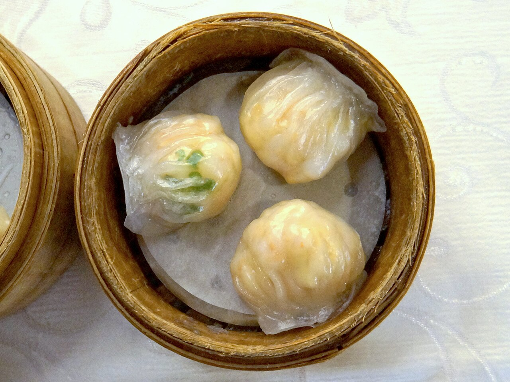
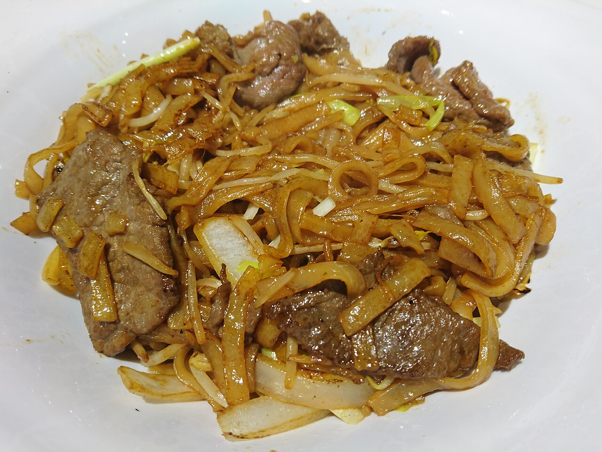

蜜汁叉烧Char Siu
广式烧腊的头牌:梅头肉以叉烧酱腌制,挂炉烧至焦边,刷蜜糖复烧。 成品红亮晶莹、蜜香四溢,肥瘦相间、软嫩多汁,是"烧味三宝"之一。

粤菜以广州、潮州、东江(客家)风味为主体,讲究"清、鲜、爽、嫩、滑"。 它善用海味与时鲜,注重原汁原味;烧腊、靓汤、早茶点心与镬气小炒, 让粤菜成为全球传播最广的中餐流派之一,广州亦被联合国教科文组织授予"美食之都"。
广式烧腊的头牌:梅头肉以叉烧酱腌制,挂炉烧至焦边,刷蜜糖复烧。 成品红亮晶莹、蜜香四溢,肥瘦相间、软嫩多汁,是"烧味三宝"之一。

粤菜"鸡有鸡味"的代表:选清远走地鸡,以浸(低温水煮)之法烹熟, 斩件后皮爽肉滑、骨中带血,配姜葱蓉蘸料,简到极致却鲜到极致。

广式早茶"四大天王"之首:澄面皮包入整只鲜虾与笋粒,捏出月牙形十三褶, 大火蒸制后皮薄透亮、虾肉弹牙,一口咬下鲜汁迸发。

大排档与茶餐厅的"镬气之王":河粉猛火快炒、干身不油, 牛肉嫩滑、豉香扑鼻,是检验粤厨功力的名点。

广式烧腊三宝之首:黑鬃鹅吹气上皮水挂炉烤至枣红, 皮脆如玻璃、肉嫩多汁,配酸梅酱解腻,是烧腊档口最亮眼的招牌。